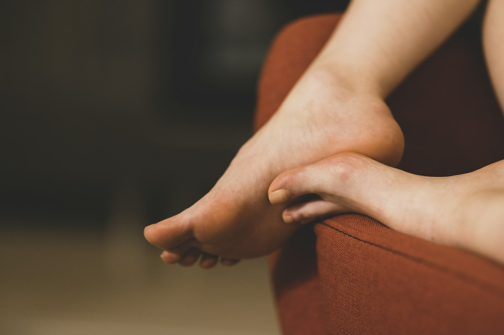

Heel and arch pain
Including plantar fasciitis, loading pain, and soreness linked to long shifts, exercise increases, or footwear mismatch.
- Movement + footwear assessment
- Load management plan
- Targeted stretching and strength work
Search quickly by symptom, body area, or treatment type to find where your concern fits.
Including plantar fasciitis, loading pain, and soreness linked to long shifts, exercise increases, or footwear mismatch.
Ball-of-foot pain, bunions, and nerve irritation between toes can be managed with pressure reduction and mechanics changes.
For painful nails, thick callus, and recurring skin issues that keep flaring up between self-care attempts.
Assessment of gait, school/sport load, and symptoms such as heel pain, tripping, or fatigue in active kids.
Routine screening for circulation, sensation, skin integrity, and pressure points to reduce complication risk.
For shin pain, foot overload, and lower-limb niggles linked to training volume, footwear, or movement strategy.

If your symptoms are new, mixed, or hard to describe, call (02) 8040 6687. We can help you choose the right first appointment.
Ask a quick question